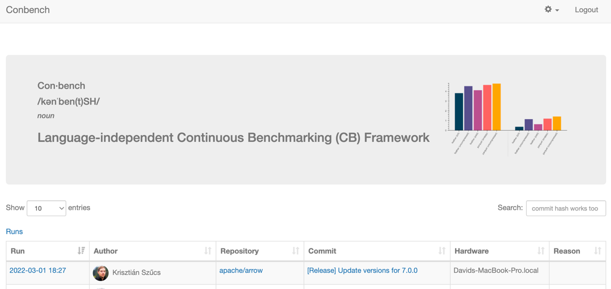
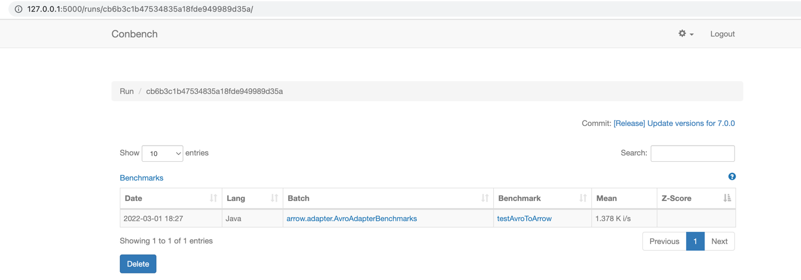
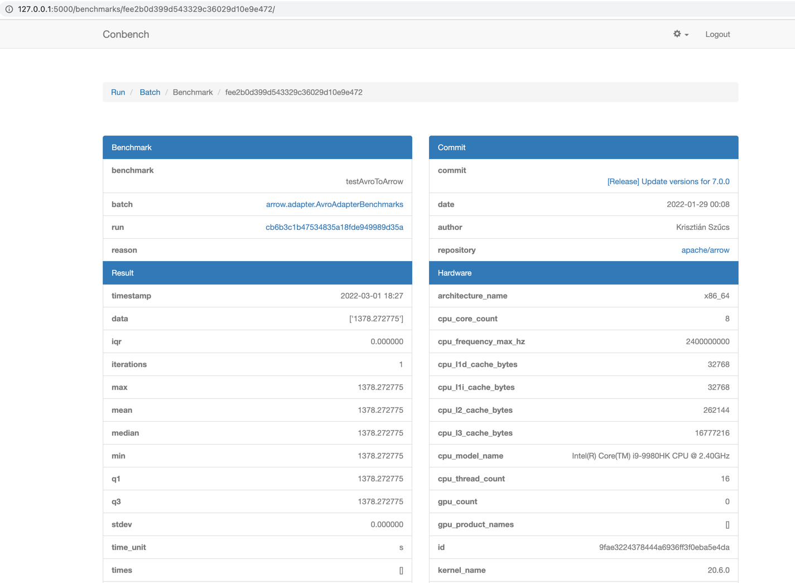

Development Guidelines¶
Logger Abstraction¶
Apache Arrow Java uses the SLF4J API, so please configure SLF4J to see logs (e.g. via Logback/Apache Log4j):
If no jar dependencies are added by the user via Logback or Apache Log4j then SLF4J will default to no-operation (NOP) logging.
If a user adds any dependencies via Logback or Apache Log4j but does not configure/add/define logback.xml/log4j2.xml, then logs will default to DEBUG mode.
To disable debug logs, the user must define their own rules within their logback.xml/log4j2.xml and define their own loggers.
Unit Testing¶
Unit tests are run by Maven during the build.
To speed up the build, you can skip them by passing -DskipTests.
$ cd arrow/java
$ mvn \
-Darrow.cpp.build.dir=../java-dist/lib -Parrow-jni \
-Darrow.c.jni.dist.dir=../java-dist/lib -Parrow-c-data \
clean install
Performance Testing¶
The arrow-performance module contains benchmarks.
Let’s configure our environment to run performance tests:
In case you need to see your performance tests on the UI, then, configure (optional):
Install conbench
Lets execute benchmark tests:
$ cd benchmarks
$ conbench java-micro --help
$ conbench java-micro
--iterations=1
--commit=e90472e35b40f58b17d408438bb8de1641bfe6ef
--java-home=<absolute path to your java home>
--src=<absolute path to your arrow project>
--benchmark-filter=org.apache.arrow.adapter.AvroAdapterBenchmarks.testAvroToArrow
Benchmark Mode Cnt Score Error Units
AvroAdapterBenchmarks.testAvroToArrow avgt 725545.783 ns/op
Time to POST http://localhost:5000/api/login/ 0.14911699295043945
Time to POST http://localhost:5000/api/benchmarks/ 0.06116318702697754
Then go to: http://127.0.0.1:5000/ to see reports:
UI Home:
UI Runs:
UI Benchmark:
Integration Testing¶
Integration tests can be run via Archery. For example, assuming you only built Arrow Java and want to run the IPC integration tests, you would do:
$ archery integration --run-ipc --with-java 1
Code Style¶
The current Java code follows the Google Java Style with Apache license headers.
Java code style is checked by Spotless during the build, and the continuous integration build will verify that changes adhere to the style guide.
Automatically fixing code style issues¶
You can check the style without building the project with
mvn spotless:check.You can autoformat the source with
mvn spotless:apply.
Example:
The following files had format violations:
src/main/java/org/apache/arrow/algorithm/rank/VectorRank.java
@@ -15,7 +15,6 @@
·*·limitations·under·the·License.
·*/
-
package·org.apache.arrow.algorithm.rank;
import·java.util.stream.IntStream;
Run 'mvn spotless:apply' to fix these violations.
Code Formatter for Intellij IDEA and Eclipse¶
Follow the instructions to set up google-java-format for:
Checkstyle¶
Checkstyle is also used for general linting. The configuration is located at checkstyle. You can also just check the style without building the project. This checks the code style of all source code under the current directory or from within an individual module.
$ mvn checkstyle:check
Maven pom.xml style is enforced with Spotless using Apache Maven pom.xml guidelines
You can also just check the style without building the project.
This checks the style of all pom.xml files under the current directory or from within an individual module.
$ mvn spotless:check
This applies the style to all pom.xml files under the current directory or from within an individual module.
$ mvn spotless:apply
Build Caching¶
Build caching is done through Develocity (formerly Maven Enterprise). To force a build without the cache, run:
mvn clean install -Ddevelocity.cache.local.enabled=false -Ddevelocity.cache.remote.enabled=false
This can be useful to make sure you see all warnings from ErrorProne, for example.
ErrorProne¶
ErrorProne should be disabled for generated code.